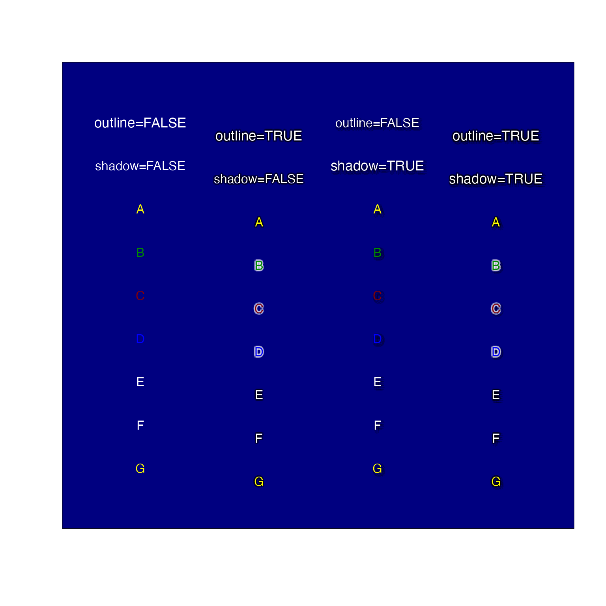
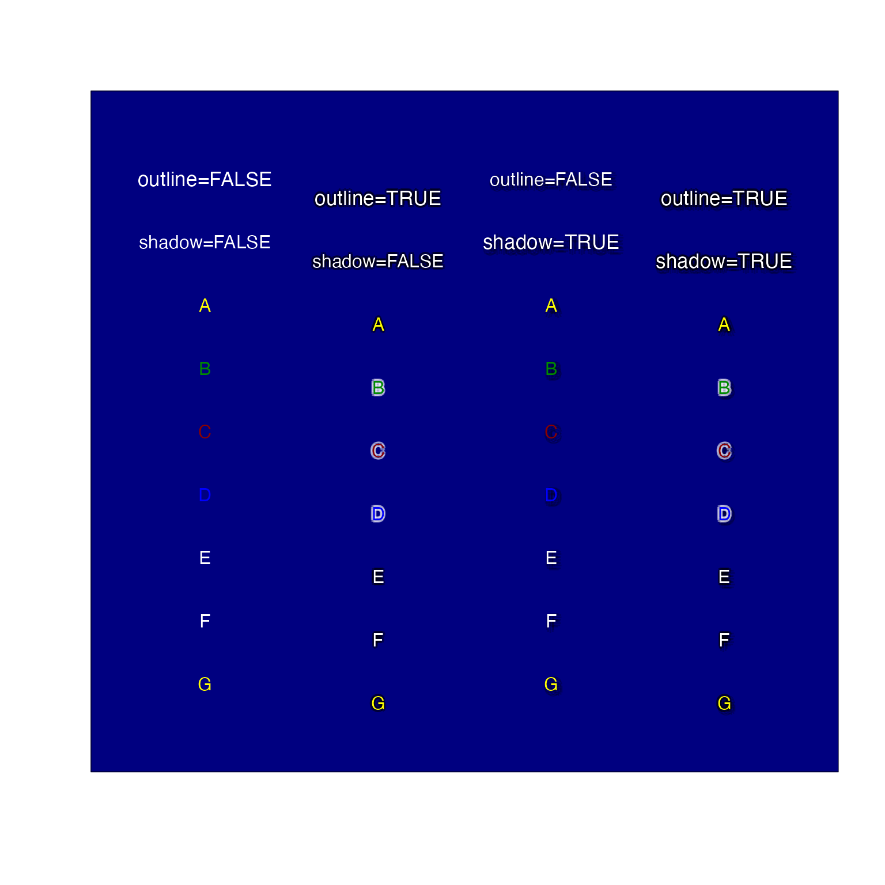

Draw text with shadow border
shadowText(
x,
y = NULL,
labels = NULL,
col = "white",
bg = setTextContrastColor(col),
r = getOption("jam.shadow.r", 0.15),
offset = c(0.15, -0.15),
n = getOption("jam.shadow.n", 8),
outline = getOption("jam.outline", TRUE),
alphaOutline = getOption("jam.alphaOutline", 0.4),
shadow = getOption("jam.shadow", FALSE),
shadowColor = getOption("jam.shadowColor", "black"),
alphaShadow = getOption("jam.alphaShadow", 0.2),
shadowOrder = c("each", "all"),
cex = par("cex"),
font = par("font"),
doTest = FALSE,
...
)Arguments
- x, y
numeric coordinates, either as vectors x and y, or x as a two-color matrix recognized by
xy.coords.- labels
vector of labels to display at the corresponding xy coordinates.
- col, bg, shadowColor
the label color, and background (outline) color, and shadow color (if
shadow=TRUE), for each element inlabels. Colors are applied in order, and recycled tolength(labels)as needed. By defaultbgwill choose a contrasting color, based uponsetTextContrastColor. Also by default, the shadow is "black" true to its name, since it is expected to darken the area around it.- r
the outline radius, expressed as a fraction of the width of the character "A" as returned by
strwidth.- offset
the outline offset position in xy coordinates, expressed as a fraction of the width of the character "A" as returned by
strwidth, andstrheight, respectively. The offset is only applied whenshadow=TRUEto enable the shadow effect.- n
the number of steps around the label used to create the outline. A higher number may be useful for very large font sizes, otherwise 8 is a reasonably good balance between detail and the number of labels added.
- outline
logical whether to enable outline drawing.
- alphaOutline, alphaShadow
alpha transparency to use for the outline and shadow colors, respectively.
- shadow
logical whether to enable shadow drawing.
- shadowOrder
charactervalue indicating when shadows are drawn relative to drawing labels:"each"draws each shadow with each label, so that shadows will overlap previous labels;"all"draws all shadows first then all labels, so labels will always appear above all shadows. See examples.- doTest
logical whether to create a visual example of output. Note that it calls
usrBoxto color the plot area, and the background can be overridden with something likefill="navy".- ...
other parameters are passed to
text. Note that certain parameters are not vectorized in that function, such assrtwhich requires only a fixed value. To rotate each label independently, multiple calls totextorshadowTextmust be made. Other parameters likeadjonly accept up to two values, and those two values affect all label positioning.
Details
Draws text with the same syntax as graphics::text() except that
this function adds a contrasting color border around the text, which
helps visibility when the background color is either not known, or is
not expected to be a fixed contrasting color.
The function draws the label n times with the chosed background color, then the label itself atop the background text. It does not typically have a noticeable effect on rendering time, but it may impact downstream uses in vector file formats like SVG and PDF, where text is stored as proper text and font objects. Take care when editing text that the underlying shadow text is also edited in sync.
The parameter doTest=TRUE will display a visual example. The
background color can be modified with fill="navy" for example.
See also
Other jam plot functions:
adjustAxisLabelMargins(),
coordPresets(),
decideMfrow(),
drawLabels(),
getPlotAspect(),
groupedAxis(),
imageByColors(),
imageDefault(),
minorLogTicksAxis(),
nullPlot(),
plotPolygonDensity(),
plotRidges(),
plotSmoothScatter(),
showColors(),
smoothScatterJam(),
sqrtAxis(),
usrBox()
Examples
shadowText(doTest=TRUE);
#> Warning: data length [48] is not a sub-multiple or multiple of the number of rows [9]
#> Warning: data length [48] is not a sub-multiple or multiple of the number of rows [9]
 shadowText(doTest=TRUE, fill="navy");
#> Warning: data length [48] is not a sub-multiple or multiple of the number of rows [9]
#> Warning: data length [48] is not a sub-multiple or multiple of the number of rows [9]

shadowText(doTest=TRUE, fill="red4");
#> Warning: data length [48] is not a sub-multiple or multiple of the number of rows [9]
#> Warning: data length [48] is not a sub-multiple or multiple of the number of rows [9]
shadowText(doTest=TRUE, fill="navy");
#> Warning: data length [48] is not a sub-multiple or multiple of the number of rows [9]
#> Warning: data length [48] is not a sub-multiple or multiple of the number of rows [9]

shadowText(doTest=TRUE, fill="red4");
#> Warning: data length [48] is not a sub-multiple or multiple of the number of rows [9]
#> Warning: data length [48] is not a sub-multiple or multiple of the number of rows [9]
 # example showing labels with overlapping shadows
opar <- par("mfrow"=c(1, 2))
nullPlot(doBoxes=FALSE);
title(main="shadowOrder='each'");
shadowText(x=c(1.5, 1.65), y=c(1.5, 1.55),
labels=c("one", "two"), cex=c(2, 4), shadowOrder="each")
nullPlot(doBoxes=FALSE);
title(main="shadowOrder='all'");
shadowText(x=c(1.5, 1.65), y=c(1.5, 1.55),
labels=c("one", "two"), cex=c(2, 4), shadowOrder="all")
# example showing labels with overlapping shadows
opar <- par("mfrow"=c(1, 2))
nullPlot(doBoxes=FALSE);
title(main="shadowOrder='each'");
shadowText(x=c(1.5, 1.65), y=c(1.5, 1.55),
labels=c("one", "two"), cex=c(2, 4), shadowOrder="each")
nullPlot(doBoxes=FALSE);
title(main="shadowOrder='all'");
shadowText(x=c(1.5, 1.65), y=c(1.5, 1.55),
labels=c("one", "two"), cex=c(2, 4), shadowOrder="all")
 par(opar)
par(opar)